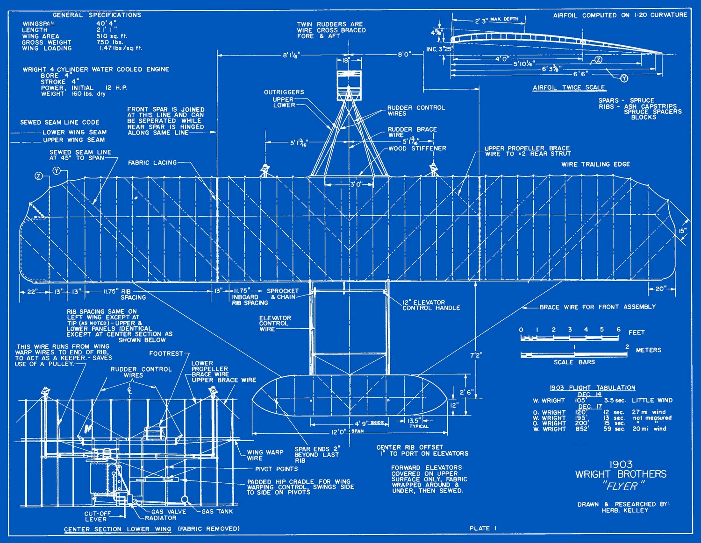

Week 7 - Continued Prototyping
One advantage of prototyping I found is using it as a way to generate ideas. When playing around with the interaction of a planet's gravity pulling the ship towards it I thought of an idea for an action puzzle game: You have a limited amount of planets. Tapping will create a planet in that position and the gravitational pull from those planets has to be used to guide a lost astronaut to some goal. I feel like I could not discover this idea if I were sitting in front of a piece of paper.
In future projects I will put more effort in prototyping rather than written plans. I have found that although, much more time consuming, a prototype is extremely valuable in understanding the practicality and viability of ideas.
Working on a business model canvas as well as talking with our mentor, Zakaria Bouguettaya, allowed us to consider the business side and marketing aspects of our project. I think the commercial viability of the project absolutely needs to be considered from the beginning. However, I also feel that the over commercialisation of a game can detract from gameplay. Many popular games on the Apple Appstore are free to play but powerful items can be purchased with real money. This can be very profitable for the developers but I find the game less fun if it boils down to spending money to win. I feel like the central goal of our project is to create something that we can present and feel proud of and this needs to be also considered as well as the business side.